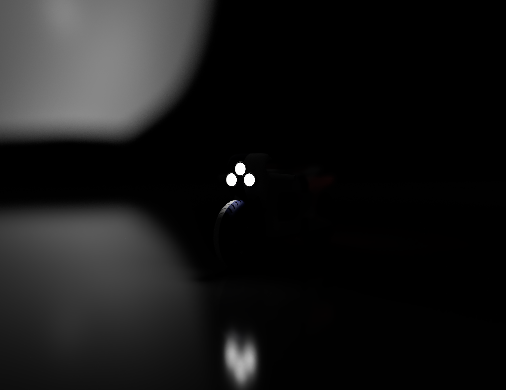

Portfolio 2026
Hi, I'm Mark Nyamu.
An MSc Digital Design and Manufacturing engineer bridging the gap between advanced generative algorithms, sustainable materials, and physical reality.
An MSc Digital Design and Manufacturing engineer bridging the gap between advanced generative algorithms, sustainable materials, and physical reality.
Markforged X7, Prusa i3 MK3, Artec Leo, Einscan SP
Fusion 360, Granta EduPack, Gravity Sketch, Exocad
Generative Design, FEA Simulation, Reverse Engineering
Onyx Carbon Fiber, PA12, J850, Mycelium, Bio-composites
Lean Six Sigma, ERP, ISO 9001/14001, APM Compliance
A selection of my recent work focusing on generative algorithms, sustainability, and advanced manufacturing.

Achieved a 92.5% component weight reduction using Autodesk Fusion Generative Design and Onyx Carbon Fiber.
Read Case Study
A digital twin approach to solving ergonomic flaws in VR headsets for afro-textured hair using Artec Leo and photogrammetry.
Read Case Study
Design and rapid prototyping of a sustainable E-moped utilizing mycelium leather, flax fiber, and solid-state lignin batteries.
Read Case Study
End-to-end workflow utilizing Einscan SP point-cloud data to digitally reconstruct and physically manufacture a functional replacement part.
Read Case StudyA comprehensive strategic framework developed to transition a legacy engineering SME from reactive ad-hoc maintenance to a proactive, highly profitable entity using IoT and ERP systems.
View Strategy HighlightsI am currently looking for new opportunities in digital design, additive manufacturing, and product engineering. Whether you have a question or just want to say hi, my inbox is always open.
Say Hello© 2026 Mark Nyamu. Designed for the Future.